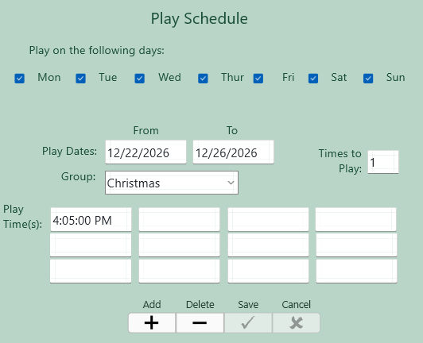
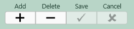
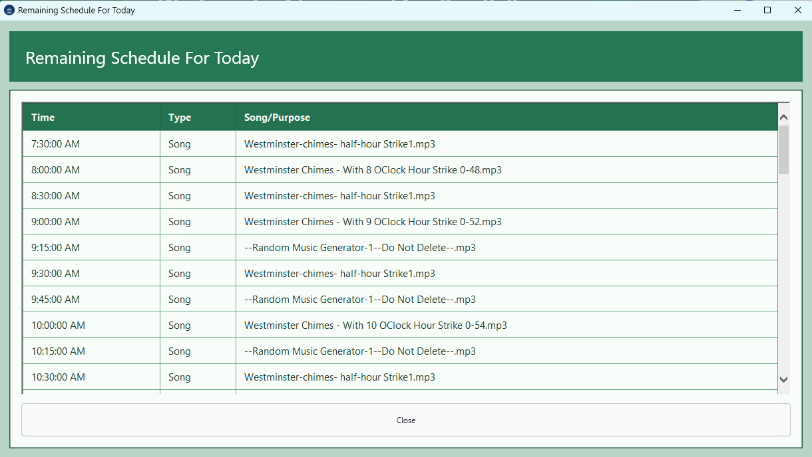
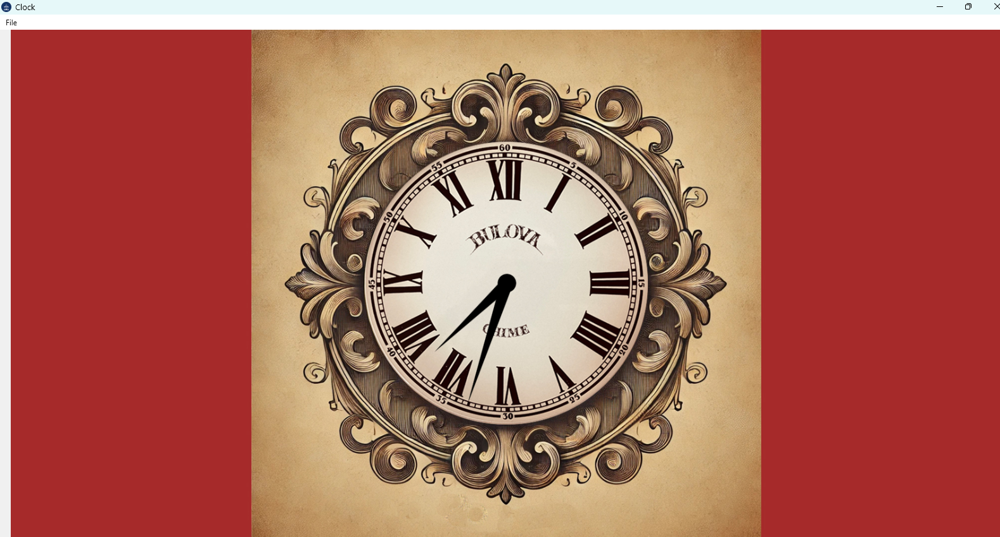
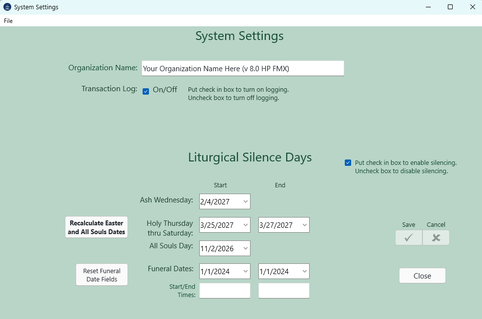
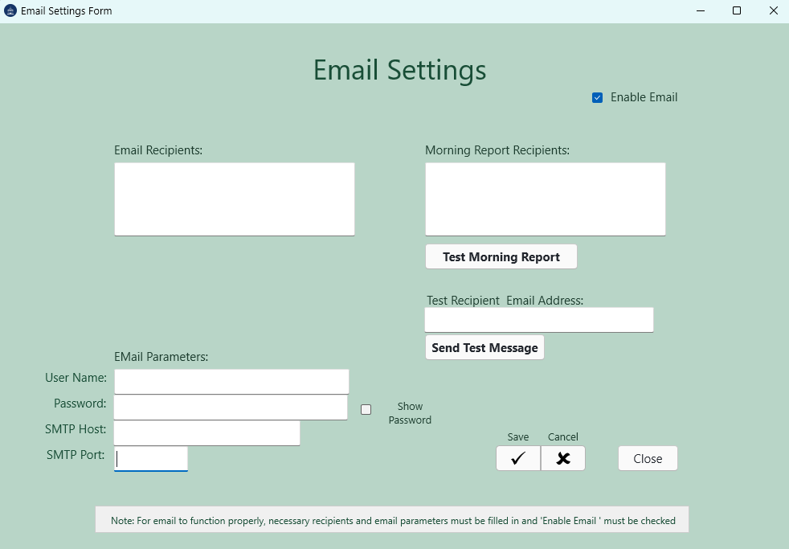
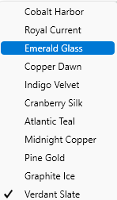
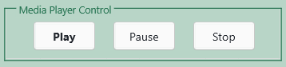

<!doctype html><html><head><meta charset="utf-8"><title>Print Manual</title><link rel="stylesheet" href="style.css"></head><body><div class="doc-topic" style="display:block;">
<h1 style="text-align: center;">Westminster Chimes and Carillon Bells</h1>

<p style="text-align: center;"><br></p><p style="text-align: center;"><br></p>

<p style="text-align: center;"></p><span style="font-family:&quot;Segoe UI&quot;;font-size:14pt;color:#111827;font-weight:400;font-style:normal;text-decoration:none;"><p style="text-align: center;">Operating Manual</p>

<p style="text-align: center;">Version 8.1 Portable Version</p></span><p style="text-align: center;"></p>

<p style="text-align: center;"><br></p><p style="text-align: center;"><br></p><p style="text-align: center;"><br></p><p style="text-align: center;"><br></p><p style="text-align: center;"><br></p><p style="text-align: center;">Revised July 8, 2026</p>

<p style="text-align: center;">A practical daily-use guide for operating, scheduling, silencing, logging, and maintaining the portable bell system.</p>
</div><hr><div class="doc-topic" style="display:block;">
<h1>Foreword</h1>

<p>Westminster Chimes and Carillon Bells is designed to run a church or organizational bell system from a portable drive. Once the songs, schedules, groups, silence windows, random music folders, and email settings are set up, the program can run continuously and play the correct audio at the correct time.</p>

<p>This guide is written for everyday operation. It explains what the screens are for, what the main controls do, and how to make normal changes without needing to know the internal source code or database design.</p><p><br></p><p><br></p>

<table class="doc-table" style="border-collapse:collapse;width:94%;margin:18px 0 18px 18px;background:#f7fbf8;border:1px solid #333;" border="1" cellspacing="0" cellpadding="7">
<tbody><tr><th style="border:1px solid #333;padding:7px 10px;vertical-align:top;text-align:left;line-height:1.35;background:#1f6f54;color:#ffffff;font-weight:bold;height:auto;overflow:visible;">Portable operation: The program must be started from the portable drive root, such as E:\Carillon.exe or F:\Carillon.exe, or by using the included start_carillon.vbs or start_carillon.bat. Starting it from the wrong working directory can prevent the database, logs, help, and music folders from being found.</th></tr>
</tbody></table>
</div><hr><div class="doc-topic" style="display:block;">
<h1>Usage Assumptions</h1>

<p></p><ul><li>The computer is running Windows 10 or later and has working audio output connected to the desired amplifier system.</li><li>The portable drive contains Carillon.exe, the database folder, music folders, help files, logs folder, and email support files, as distributed in the packaged zip file.</li><li>The person setting up the system understands the intended church or organization schedule.</li><li>A current backup exists before major playlist, group, database, or release changes are made.</li><li>Times are entered carefully. Version 8.1 supports seconds in schedules and silence windows.</li></ul><p></p>


</div><hr><div class="doc-topic" style="display:block;">
<h1>What's New in Version 8.1</h1>

<p><ul><li>Version 8.1 focuses on reliability, clearer editing, stronger schedule rebuilding, better theme consistency, and better reporting. These changes are practical operator improvements rather than a new workflow.</li><li>Play-time fields and schedule displays support seconds, such as 4:05:00 PM or 22:15:30.</li><li>The remaining schedule display uses a clean table with Time, Type, and Song/Purpose columns.</li><li>A Silence schedule has been added to silence the bell system during times when silence is required. The entries in the schedule are shown with full seconds and suppress scheduled events during the silence window.</li><li>Groups, Settings, Email Settings, Random Music, and Silence Schedule screens rebuild the active schedule when they close.</li><li>Group maintenance copies group dates and the primary group play time to matching songs and clears stale extra play-time slots.</li><li>Random Music exposes seven directory slots: one default folder and six date-window override folders. Users may schedule different types of random music for at six times during the year.</li><li>Editable screens now use labeled navigator buttons so users know which button means Add, Delete, Save, Cancel, First, Prior, Next, and Last.</li><li>Show Log opens a themed log viewer instead of just a plain viewer.</li><li>Theme rules are improved so dark and light themes remain readable across the main and maintenance screens.</li><li>Morning reports and the log viewer read the same log file used by playback logging.</li></ul></p>


</div><hr><div class="doc-topic" style="display:block;">
<h1>The Portable Drive Layout</h1>

<p>A working portable copy normally contains the following folders and files on the root of the flash drive or portable media. This data is distributed in a zip file, downloaded from the web site. This layout should NOT be changed since the application expects the files to be in a certain place.</p>

<table class="doc-table" style="border-collapse:collapse;width:94%;margin:18px 0 18px 18px;background:#f7fbf8;border:1px solid #333;" border="1" cellspacing="0" cellpadding="7">
<tbody><tr><th style="border:1px solid #333;padding:7px 10px;vertical-align:top;text-align:left;line-height:1.35;background:#1f6f54;color:#ffffff;font-weight:bold;height:auto;overflow:visible;">Item</th><th style="border:1px solid #333;padding:7px 10px;vertical-align:top;text-align:left;line-height:1.35;background:#1f6f54;color:#ffffff;font-weight:bold;height:auto;overflow:visible;">Purpose</th></tr>
<tr><td style="border:1px solid #333;padding:7px 10px;vertical-align:top;text-align:left;line-height:1.35;height:auto;overflow:visible;">Carillon.exe</td><td style="border:1px solid #333;padding:7px 10px;vertical-align:top;text-align:left;line-height:1.35;height:auto;overflow:visible;">The main program.</td></tr>
<tr><td style="border:1px solid #333;padding:7px 10px;vertical-align:top;text-align:left;line-height:1.35;height:auto;overflow:visible;">start_carillon.vbs</td><td style="border:1px solid #333;padding:7px 10px;vertical-align:top;text-align:left;line-height:1.35;height:auto;overflow:visible;">Preferred startup helper for normal launch.</td></tr>
<tr><td style="border:1px solid #333;padding:7px 10px;vertical-align:top;text-align:left;line-height:1.35;height:auto;overflow:visible;">start_carillon.bat</td><td style="border:1px solid #333;padding:7px 10px;vertical-align:top;text-align:left;line-height:1.35;height:auto;overflow:visible;">Batch startup helper.</td></tr>
<tr><td style="border:1px solid #333;padding:7px 10px;vertical-align:top;text-align:left;line-height:1.35;height:auto;overflow:visible;">databases\carillon.db</td><td style="border:1px solid #333;padding:7px 10px;vertical-align:top;text-align:left;line-height:1.35;height:auto;overflow:visible;">Saved playlist, settings, groups, random music slots, and silence schedule data.</td></tr>
<tr><td style="border:1px solid #333;padding:7px 10px;vertical-align:top;text-align:left;line-height:1.35;height:auto;overflow:visible;">Help</td><td style="border:1px solid #333;padding:7px 10px;vertical-align:top;text-align:left;line-height:1.35;height:auto;overflow:visible;">Compiled or web help files used by the Help menu.</td></tr>
<tr><td style="border:1px solid #333;padding:7px 10px;vertical-align:top;text-align:left;line-height:1.35;height:auto;overflow:visible;">logs\CarillonPlayLog.txt</td><td style="border:1px solid #333;padding:7px 10px;vertical-align:top;text-align:left;line-height:1.35;height:auto;overflow:visible;">Playback and transaction log, when logging is enabled.</td></tr>
<tr><td style="border:1px solid #333;padding:7px 10px;vertical-align:top;text-align:left;line-height:1.35;height:auto;overflow:visible;">Songs, Music, Random_songs, etc.</td><td style="border:1px solid #333;padding:7px 10px;vertical-align:top;text-align:left;line-height:1.35;height:auto;overflow:visible;">Audio folders used by normal scheduled playback and random music.</td></tr>
<tr><td style="border:1px solid #333;padding:7px 10px;vertical-align:top;text-align:left;line-height:1.35;height:auto;overflow:visible;">libeay32.dll and ssleay32.dll</td><td style="border:1px solid #333;padding:7px 10px;vertical-align:top;text-align:left;line-height:1.35;height:auto;overflow:visible;">Email support files used when email reports are enabled.</td></tr>
</tbody></table>
</div><hr><div class="doc-topic" style="display:block;">
<h1>Starting the Program</h1>

<p>Insert the portable drive and note the drive letter assigned by Windows.</p>

<p>Open the drive root in File Explorer.</p>

<p>Start the program with start_carillon.vbs, start_carillon.bat, or Carillon.exe from that drive root.</p>

<p>Confirm the main screen opens and the database loads without an unable-to-open-database message, or any other errors. There should be none.</p>

<p>Confirm the Enable Schedule box is checked if automatic playback should run.</p><p><br></p>

<table class="doc-table" style="border-collapse:collapse;width:94%;margin:18px 0 18px 18px;background:#f7fbf8;border:1px solid #333;" border="1" cellspacing="0" cellpadding="7">
<tbody><tr><th style="border:1px solid #333;padding:7px 10px;vertical-align:top;text-align:left;line-height:1.35;background:#1f6f54;color:#ffffff;font-weight:bold;height:auto;overflow:visible;">Important: If the program reports that it cannot open the database file, close it and restart it from the portable drive root. Opening the executable from another working directory can break relative paths and the application will not start.</th></tr>
</tbody></table>
</div><hr><div class="doc-topic" style="display:block;">
<h1>Converting From Version 7.2.4 to 8.1</h1>

<p>Use the database conversion utility when moving an existing Carillon 7.2.4 database to Westminster Chimes and Carillon Bells 8.1. The conversion keeps the existing playlist, seasonal groups, settings, random music folders, and full song paths, then adds the database structures required by version 8.1.</p>

<table class="doc-table">
<tbody><tr><th>Important: Close Carillon before running the database converter. Do not convert the database while the main program is open.</th></tr>
</tbody></table>

<ol>
<li>Open the version 8.1 portable drive or folder.</li>
<li>Start <b>CarillonDBUpgrade724To81.exe</b> from the portable drive root when possible.</li>
<li>Click <b>Browse</b> and select the database to upgrade. In a normal portable installation this is <b>databases\carillon.db</b>.</li>
<li>Confirm the status line reports the old 7.2.4 wide random-directory format.</li>
<li>Check the confirmation box.</li>
<li>Click <b>Back Up and Upgrade</b>.</li>
<li>Wait for the completion message and note the backup and report locations.</li>
<li>Start Carillon 8.1 from the portable drive root and review Groups, Random Music, Silence Schedule, and Show Remaining Schedule before unattended use.</li>
</ol>

<h2>What the converter changes</h2>
<ul>
<li>Creates a dated database backup under <b>databasesackup</b>.</li>
<li>Converts Random Music Directory Rotation to the version 8.1 seven-slot row format.</li>
<li>Adds the Silence Schedule table with twelve disabled windows.</li>
<li>Adds missing version 8.1 settings fields when needed.</li>
<li>Copies seasonal group dates and the main group play time to matching playlist songs.</li>
<li>Normalizes stored time values so seconds are kept.</li>
<li>Writes a conversion report under <b>logs</b>.</li>
</ul>

<p>The complete conversion procedure is documented in <b>ConversionTo8_1.docx</b>.</p>
<h1>Main Screen Overview</h1>

<p>The main screen is the daily operating screen. It shows the grouped song list, the schedule editor for the selected song, manual playback controls, the system volume control, the schedule status, and the main menu.</p>

<div class="doc-figure" draggable="true" style="display:block;clear:both;margin:16px 0;text-align:left;"><div class="doc-caption" style="display:block;clear:both;font-size:13px;color:#52606d;margin:6px 0 16px 0;"><br></div></div>

<table class="doc-table" style="border-collapse:collapse;width:94%;margin:18px 0 18px 18px;background:#f7fbf8;border:1px solid #333;" border="1" cellspacing="0" cellpadding="7">
<tbody><tr><th style="border:1px solid #333;padding:7px 10px;vertical-align:top;text-align:left;line-height:1.35;background:#1f6f54;color:#ffffff;font-weight:bold;height:auto;overflow:visible;">Area</th><th style="border:1px solid #333;padding:7px 10px;vertical-align:top;text-align:left;line-height:1.35;background:#1f6f54;color:#ffffff;font-weight:bold;height:auto;overflow:visible;">What it does</th></tr>
<tr><td style="border:1px solid #333;padding:7px 10px;vertical-align:top;text-align:left;line-height:1.35;height:auto;overflow:visible;">Application header</td><td style="border:1px solid #333;padding:7px 10px;vertical-align:top;text-align:left;line-height:1.35;height:auto;overflow:visible;">Shows the program title and the active visual theme.</td></tr>
<tr><td style="border:1px solid #333;padding:7px 10px;vertical-align:top;text-align:left;line-height:1.35;height:auto;overflow:visible;">Enable Schedule</td><td style="border:1px solid #333;padding:7px 10px;vertical-align:top;text-align:left;line-height:1.35;height:auto;overflow:visible;">Turns automatic scheduled playback on or off.</td></tr>
<tr><td style="border:1px solid #333;padding:7px 10px;vertical-align:top;text-align:left;line-height:1.35;height:auto;overflow:visible;">Playlist grid</td><td style="border:1px solid #333;padding:7px 10px;vertical-align:top;text-align:left;line-height:1.35;height:auto;overflow:visible;">Shows songs grouped by season or purpose, with song duration.</td></tr>
<tr><td style="border:1px solid #333;padding:7px 10px;vertical-align:top;text-align:left;line-height:1.35;height:auto;overflow:visible;">Open All / Close All</td><td style="border:1px solid #333;padding:7px 10px;vertical-align:top;text-align:left;line-height:1.35;height:auto;overflow:visible;">Expands or collapses all song groups in the grid.</td></tr>
<tr><td style="border:1px solid #333;padding:7px 10px;vertical-align:top;text-align:left;line-height:1.35;height:auto;overflow:visible;">Play Schedule panel</td><td style="border:1px solid #333;padding:7px 10px;vertical-align:top;text-align:left;line-height:1.35;height:auto;overflow:visible;">Edits dates, weekdays, group, play times, and repeat count for the selected song.</td></tr>
<tr><td style="border:1px solid #333;padding:7px 10px;vertical-align:top;text-align:left;line-height:1.35;height:auto;overflow:visible;">Navigator</td><td style="border:1px solid #333;padding:7px 10px;vertical-align:top;text-align:left;line-height:1.35;height:auto;overflow:visible;">Adds, deletes, saves, or cancels playlist edits.</td></tr>
<tr><td style="border:1px solid #333;padding:7px 10px;vertical-align:top;text-align:left;line-height:1.35;height:auto;overflow:visible;">Media Player Control</td><td style="border:1px solid #333;padding:7px 10px;vertical-align:top;text-align:left;line-height:1.35;height:auto;overflow:visible;">Manually plays, pauses, or stops the selected song.</td></tr>
<tr><td style="border:1px solid #333;padding:7px 10px;vertical-align:top;text-align:left;line-height:1.35;height:auto;overflow:visible;">System Volume</td><td style="border:1px solid #333;padding:7px 10px;vertical-align:top;text-align:left;line-height:1.35;height:auto;overflow:visible;">Controls the Windows system volume and mute state.</td></tr>
<tr><td style="border:1px solid #333;padding:7px 10px;vertical-align:top;text-align:left;line-height:1.35;height:auto;overflow:visible;">Status bar</td><td style="border:1px solid #333;padding:7px 10px;vertical-align:top;text-align:left;line-height:1.35;height:auto;overflow:visible;">Shows recent playback, song counts, and version/status information.</td></tr>
</tbody></table>
</div><hr><div class="doc-topic" style="display:block;">
<h1>Enable Schedule</h1>

<p>When Enable Schedule is checked, the program builds the daily schedule and the schedule timer watches for due entries. When the box is unchecked, scheduled playback is stopped and the current schedule list is cleared.</p>

<div class="doc-figure" draggable="true" style="display:block;clear:both;margin:16px 0;text-align:left;"></div>

<p>Many maintenance screens temporarily disable the schedule and then re-enable it when they close so changes are picked up when the schedule or other data is changed. If you intentionally turn the schedule off, turn it back on before leaving the computer unattended. Failure to do so will leave the schedule not running and no music will play.</p>
</div><hr><div class="doc-topic" style="display:block;">
<h1>Playlist Grid</h1>

<p>The playlist grid is a work area for reviewing songs. It is grouped by the song group or season. A group line shows how many songs are inside the group and can be opened or closed.</p>

<div class="doc-figure" draggable="true" class="" style="width: 488px; max-width: 100%; height: auto; box-sizing: border-box;" style="display:block;clear:both;margin:16px 0;text-align:left;"></div>

<p><ol><li>Click a group line to open or close that group.</li><li>Use Open All to expand every group.</li><li>Use Close All to collapse every group.</li><li>Select a song row to edit its schedule fields on the right side of the screen.</li><li>Double-clicking or using Play can manually play the selected song.</li><li><br></li></ol></p>


<table class="doc-table" style="border-collapse:collapse;width:94%;margin:18px 0 18px 18px;background:#f7fbf8;border:1px solid #333;" border="1" cellspacing="0" cellpadding="7">
<tbody><tr><th style="border:1px solid #333;padding:7px 10px;vertical-align:top;text-align:left;line-height:1.35;background:#1f6f54;color:#ffffff;font-weight:bold;height:auto;overflow:visible;">Grid purpose: The grid is not the compiled daily schedule. It is the saved playlist and scheduling editor. Use Schedule &gt; Show Remaining Schedule to see what is still due today.</th></tr>
</tbody></table>
</div><hr><div class="doc-topic" style="display:block;">
<h1>Play Schedule Panel</h1>

<p>The Play Schedule panel controls when the selected playlist row is eligible to play. A song normally needs a valid date range, at least one selected weekday, and at least one play time.</p>

<div class="doc-figure" draggable="true" class="" style="width: 479px; max-width: 100%; height: auto; box-sizing: border-box;" style="display:block;clear:both;margin:16px 0;text-align:left;"><div class="doc-caption" style="display:block;clear:both;font-size:13px;color:#52606d;margin:6px 0 16px 0;"><br></div></div>

<table class="doc-table" style="border-collapse:collapse;width:94%;margin:18px 0 18px 18px;background:#f7fbf8;border:1px solid #333;" border="1" cellspacing="0" cellpadding="7">
<tbody><tr><th style="border:1px solid #333;padding:7px 10px;vertical-align:top;text-align:left;line-height:1.35;background:#1f6f54;color:#ffffff;font-weight:bold;height:auto;overflow:visible;">Field</th><th style="border:1px solid #333;padding:7px 10px;vertical-align:top;text-align:left;line-height:1.35;background:#1f6f54;color:#ffffff;font-weight:bold;height:auto;overflow:visible;">How to use it</th></tr>
<tr><td style="border:1px solid #333;padding:7px 10px;vertical-align:top;text-align:left;line-height:1.35;height:auto;overflow:visible;">Play on the following days</td><td style="border:1px solid #333;padding:7px 10px;vertical-align:top;text-align:left;line-height:1.35;height:auto;overflow:visible;">Check the weekdays when the selected row may play.</td></tr>
<tr><td style="border:1px solid #333;padding:7px 10px;vertical-align:top;text-align:left;line-height:1.35;height:auto;overflow:visible;">Play Dates From / To</td><td style="border:1px solid #333;padding:7px 10px;vertical-align:top;text-align:left;line-height:1.35;height:auto;overflow:visible;">Enter the inclusive date range for the row.</td></tr>
<tr><td style="border:1px solid #333;padding:7px 10px;vertical-align:top;text-align:left;line-height:1.35;height:auto;overflow:visible;">Group</td><td style="border:1px solid #333;padding:7px 10px;vertical-align:top;text-align:left;line-height:1.35;height:auto;overflow:visible;">Select the group or season assigned to the row.</td></tr>
<tr><td style="border:1px solid #333;padding:7px 10px;vertical-align:top;text-align:left;line-height:1.35;height:auto;overflow:visible;">Play Time(s)</td><td style="border:1px solid #333;padding:7px 10px;vertical-align:top;text-align:left;line-height:1.35;height:auto;overflow:visible;">Enter up to twelve times. Seconds are allowed.</td></tr>
<tr><td style="border:1px solid #333;padding:7px 10px;vertical-align:top;text-align:left;line-height:1.35;height:auto;overflow:visible;">Times to Play</td><td style="border:1px solid #333;padding:7px 10px;vertical-align:top;text-align:left;line-height:1.35;height:auto;overflow:visible;">Enter how many times the selected item should repeat when triggered. Keep this low unless a repeat is intended.</td></tr>
</tbody></table>
</div><hr><div class="doc-topic" style="display:block;">
<h1>Entering Times</h1>

<p>This application accepts both 12-hour and 24-hour time entries in schedule fields where the screen supports time input. Seconds may be included also and, in some cases is recommended. This would be, for example, when you have two things that should happen at the same time like chiming the noon hour and then having silence from noon to 3 PM. You would schedule the chime of noon at 12:00:00 and the silence to begin at 12:00:10. That would put them in chronological order correctly. The program normalizes display to a 12-hour time with AM or PM when appropriate.</p>

<table class="doc-table" style="border-collapse:collapse;width:94%;margin:18px 0 18px 18px;background:#f7fbf8;border:1px solid #333;" border="1" cellspacing="0" cellpadding="7">
<tbody><tr><th style="border:1px solid #333;padding:7px 10px;vertical-align:top;text-align:left;line-height:1.35;background:#1f6f54;color:#ffffff;font-weight:bold;height:auto;overflow:visible;">You can enter</th><th style="border:1px solid #333;padding:7px 10px;vertical-align:top;text-align:left;line-height:1.35;background:#1f6f54;color:#ffffff;font-weight:bold;height:auto;overflow:visible;">Typical display</th></tr>
<tr><td style="border:1px solid #333;padding:7px 10px;vertical-align:top;text-align:left;line-height:1.35;height:auto;overflow:visible;">4:05 PM</td><td style="border:1px solid #333;padding:7px 10px;vertical-align:top;text-align:left;line-height:1.35;height:auto;overflow:visible;">4:05:00 PM</td></tr>
<tr><td style="border:1px solid #333;padding:7px 10px;vertical-align:top;text-align:left;line-height:1.35;height:auto;overflow:visible;">4:05:30 PM</td><td style="border:1px solid #333;padding:7px 10px;vertical-align:top;text-align:left;line-height:1.35;height:auto;overflow:visible;">4:05:30 PM</td></tr>
<tr><td style="border:1px solid #333;padding:7px 10px;vertical-align:top;text-align:left;line-height:1.35;height:auto;overflow:visible;">16:05</td><td style="border:1px solid #333;padding:7px 10px;vertical-align:top;text-align:left;line-height:1.35;height:auto;overflow:visible;">4:05:00 PM</td></tr>
<tr><td style="border:1px solid #333;padding:7px 10px;vertical-align:top;text-align:left;line-height:1.35;height:auto;overflow:visible;">22:15:30</td><td style="border:1px solid #333;padding:7px 10px;vertical-align:top;text-align:left;line-height:1.35;height:auto;overflow:visible;">10:15:30 PM</td></tr>
</tbody></table>

<p>Seconds matter: If you enter seconds, confirm them in Show Remaining Schedule. The schedule display should show full h:mm:ss AM/PM times.</p>
</div><hr><div class="doc-topic" style="display:block;">
<h1>Navigator Buttons and Editing</h1>

<p>Editable screens use navigator buttons. The labels above the buttons identify the action. The most common buttons are Add, Delete, Save, and Cancel. Some maintenance screens also show First, Prior, Next, and Last.</p>

<div class="doc-figure" draggable="true" style="display:block;clear:both;margin:16px 0;text-align:left;"><div class="doc-caption" style="display:block;clear:both;font-size:13px;color:#52606d;margin:6px 0 16px 0;">Picture 1</div></div>

<table class="doc-table" style="border-collapse:collapse;width:94%;margin:18px 0 18px 18px;background:#f7fbf8;border:1px solid #333;" border="1" cellspacing="0" cellpadding="7">
<tbody><tr><th style="border:1px solid #333;padding:7px 10px;vertical-align:top;text-align:left;line-height:1.35;background:#1f6f54;color:#ffffff;font-weight:bold;height:auto;overflow:visible;">Button label</th><th style="border:1px solid #333;padding:7px 10px;vertical-align:top;text-align:left;line-height:1.35;background:#1f6f54;color:#ffffff;font-weight:bold;height:auto;overflow:visible;">Meaning</th></tr>
<tr><td style="border:1px solid #333;padding:7px 10px;vertical-align:top;text-align:left;line-height:1.35;height:auto;overflow:visible;">Add</td><td style="border:1px solid #333;padding:7px 10px;vertical-align:top;text-align:left;line-height:1.35;height:auto;overflow:visible;">Insert a new record where adding is supported.</td></tr>
<tr><td style="border:1px solid #333;padding:7px 10px;vertical-align:top;text-align:left;line-height:1.35;height:auto;overflow:visible;">Delete</td><td style="border:1px solid #333;padding:7px 10px;vertical-align:top;text-align:left;line-height:1.35;height:auto;overflow:visible;">Delete the selected record where deletion is supported.</td></tr>
<tr><td style="border:1px solid #333;padding:7px 10px;vertical-align:top;text-align:left;line-height:1.35;height:auto;overflow:visible;">Save</td><td style="border:1px solid #333;padding:7px 10px;vertical-align:top;text-align:left;line-height:1.35;height:auto;overflow:visible;">Post pending changes to the database.</td></tr>
<tr><td style="border:1px solid #333;padding:7px 10px;vertical-align:top;text-align:left;line-height:1.35;height:auto;overflow:visible;">Cancel</td><td style="border:1px solid #333;padding:7px 10px;vertical-align:top;text-align:left;line-height:1.35;height:auto;overflow:visible;">Discard pending changes and restore the saved value.</td></tr>
<tr><td style="border:1px solid #333;padding:7px 10px;vertical-align:top;text-align:left;line-height:1.35;height:auto;overflow:visible;">First / Prior / Next / Last</td><td style="border:1px solid #333;padding:7px 10px;vertical-align:top;text-align:left;line-height:1.35;height:auto;overflow:visible;">Move through records on maintenance screens.</td></tr>
</tbody></table>

<p>If you change a field and then save, the schedule is rebuilt where needed. If you cancel, the form should return to the saved database value. Note that some screens require entry to be terminated with the ENTER key before the <b>Save</b> checkmark become active.</p>
</div><hr><div class="doc-topic" style="display:block;">
<h1>Setting Up a Song Schedule</h1><ol><li>

Select the song in the playlist grid.</li><li>
Choose the weekdays when the song should play.</li><li>
Enter the Play Dates From and To fields.</li><li>
Select the group or season if one applies.</li><li>
Enter one or more play times. Use seconds when exact timing is needed.</li><li>
Set Times to Play.</li><li>
Click the navigator Save check mark.</li></ol>
<p>Use Schedule &gt; Show Remaining Schedule to confirm the expected entries.</p>

<table class="doc-table" style="border-collapse:collapse;width:94%;margin:18px 0 18px 18px;background:#f7fbf8;border:1px solid #333;" border="1" cellspacing="0" cellpadding="7">
<tbody><tr><th style="border:1px solid #333;padding:7px 10px;vertical-align:top;text-align:left;line-height:1.35;background:#1f6f54;color:#ffffff;font-weight:bold;height:auto;overflow:visible;">After edits: If the schedule was disabled for editing, it should rebuild after Save. If it remains disabled because you turned it off manually, check Enable Schedule again.</th></tr>
</tbody></table>
</div><hr><div class="doc-topic" style="display:block;">
<h1>Adding Songs</h1>

<p>A new song can be added to the playlist and then scheduled like any existing row. The exact file path must be preserved so the media player can find the audio file.</p><ol><li>

Click the Add button in the main navigator.</li><li>
Choose or enter the song file path through the song-add workflow.</li><li>
Assign the group or season.</li><li>
Fill in dates, weekdays, play times, and Times to Play.</li><li>
Click Save.</li><li>
Confirm the song appears in the expected group and test it with Play if desired.</li></ol>
<table class="doc-table" style="border-collapse:collapse;width:94%;margin:18px 0 18px 18px;background:#f7fbf8;border:1px solid #333;" border="1" cellspacing="0" cellpadding="7">
<tbody><tr><th style="border:1px solid #333;padding:7px 10px;vertical-align:top;text-align:left;line-height:1.35;background:#1f6f54;color:#ffffff;font-weight:bold;height:auto;overflow:visible;">Do not strip paths: Songs need their full path to be found. If a song file is moved or renamed, update the playlist row or re-add the song.</th></tr>
</tbody></table>
</div><hr><div class="doc-topic" style="display:block;">
<h1>Show Remaining Schedule</h1>

<div class="doc-figure" draggable="true" style="display:block;clear:both;margin:16px 0;text-align:left;"><div class="doc-caption" style="display:block;clear:both;font-size:13px;color:#52606d;margin:6px 0 16px 0;">Picture 1</div></div>

<p>Use Schedule &gt; Show Remaining Schedule to review what is still due today. The display is a themed table with Time, Type, and Song/Purpose columns.</p>

<p>Song entries show the scheduled play time and file name or purpose.</p>

<p>Silence entries show the start time and the silence purpose through the end time.</p>

<p>Played entries are removed from the remaining schedule list.</p>

<p>The Time column shows seconds, such as 4:59:05 PM.</p>

<p>The list is sorted by time so the next event appears in the correct order.</p>
</div><hr><div class="doc-topic" style="display:block;">
<h1>Silence Schedule</h1>

<p>The Silence Schedule screen defines daily time windows when scheduled playback should be suppressed. This is useful for services, classes, meetings, funerals, or other quiet periods.</p>

<p></p><ol><li>Open it from Schedule &gt; Silence Schedule.</li><li>There are twelve silence windows.</li><li>Each window can be enabled or disabled.</li><li>Each window has a purpose, start time, end time, and weekday selection.</li><li>Start time must be before end time for the same day.</li><li>Times may be entered in 12-hour or 24-hour form and may include seconds.</li><li>Save with the navigator Save check mark.</li></ol><p></p>


<p>When the schedule is built, normal playback entries during an active silence window are left out of the remaining schedule. The remaining schedule display shows the silence entry itself so the operator can see why music is not scheduled during that period.</p>

<table class="doc-table" style="border-collapse:collapse;width:94%;margin:18px 0 18px 18px;background:#f7fbf8;border:1px solid #333;" border="1" cellspacing="0" cellpadding="7">
<tbody><tr><th style="border:1px solid #333;padding:7px 10px;vertical-align:top;text-align:left;line-height:1.35;background:#1f6f54;color:#ffffff;font-weight:bold;height:auto;overflow:visible;">Daily rebuild: The schedule rebuilds after midnight, around 00:05, so silence windows and date-based changes are picked up for the new day.</th></tr>
</tbody></table>
</div><hr><div class="doc-topic" style="display:block;">
<h1>Group Maintenance</h1>

<p>The Group Maintenance screen manages seasonal group names, date windows, and the main group play time. It is used for holidays and seasonal collections such as Christmas, Easter, Thanksgiving, Memorial Day, Independence Day, and similar groups.</p>

<p></p><ol><li>Open it from Groups &gt; Group Maintenance.</li><li>Use the grid to review group dates and play times.</li><li>Use the date and time fields to edit the selected group.</li><li>Use Recalculate Dates for Upcoming Year when holiday dates need to be refreshed.</li><li>Save changes with the navigator Save check mark.</li></ol><p></p>


<p>When group information is applied to playlist songs, Version 8.1 copies the group date range and primary group play time to matching playlist rows. It also clears secondary time slots for that group so old extra times do not cause the group to play more than intended.</p>
</div><hr><div class="doc-topic" style="display:block;">
<h1>Clock Window</h1>

<p>The Clock menu opens the analog clock display. It is a separate utility window and can be closed when not needed.</p>

<div class="doc-figure" draggable="true" style="display:block;clear:both;margin:16px 0;text-align:left;"><div class="doc-caption" style="display:block;clear:both;font-size:13px;color:#52606d;margin:6px 0 16px 0;">Picture 1</div></div>
</div><hr><div class="doc-topic" style="display:block;">
<h1>System Settings</h1>

<p>System Settings stores organization information, logging status, and liturgical or special silence dates.<br><br></p><p></p><p style="clear:both"><br></p>

<table class="doc-table" style="border-collapse:collapse;width:94%;margin:18px 0 18px 18px;background:#f7fbf8;border:1px solid #333;" border="1" cellspacing="0" cellpadding="7">
<tbody><tr><th style="border:1px solid #333;padding:7px 10px;vertical-align:top;text-align:left;line-height:1.35;background:#1f6f54;color:#ffffff;font-weight:bold;height:auto;overflow:visible;">Area</th><th style="border:1px solid #333;padding:7px 10px;vertical-align:top;text-align:left;line-height:1.35;background:#1f6f54;color:#ffffff;font-weight:bold;height:auto;overflow:visible;">Purpose</th></tr>
<tr><td style="border:1px solid #333;padding:7px 10px;vertical-align:top;text-align:left;line-height:1.35;height:auto;overflow:visible;">Organization Name</td><td style="border:1px solid #333;padding:7px 10px;vertical-align:top;text-align:left;line-height:1.35;height:auto;overflow:visible;">Name shown in program identity, splash/reporting areas, and related output.</td></tr>
<tr><td style="border:1px solid #333;padding:7px 10px;vertical-align:top;text-align:left;line-height:1.35;height:auto;overflow:visible;">Transaction Log</td><td style="border:1px solid #333;padding:7px 10px;vertical-align:top;text-align:left;line-height:1.35;height:auto;overflow:visible;">Turns logging on or off. It is advisable to keep it on and log events.</td></tr>
<tr><td style="border:1px solid #333;padding:7px 10px;vertical-align:top;text-align:left;line-height:1.35;height:auto;overflow:visible;">Liturgical Silence Days</td><td style="border:1px solid #333;padding:7px 10px;vertical-align:top;text-align:left;line-height:1.35;height:auto;overflow:visible;">Keeps dates such as Ash Wednesday, Holy Thursday through Saturday, All Souls Day, and funeral or other silence dates.</td></tr>
<tr><td style="border:1px solid #333;padding:7px 10px;vertical-align:top;text-align:left;line-height:1.35;height:auto;overflow:visible;">Recalculate Easter and All Souls Dates</td><td style="border:1px solid #333;padding:7px 10px;vertical-align:top;text-align:left;line-height:1.35;height:auto;overflow:visible;">Refreshes annual calculated dates for the next occurrence whether it is the current year or the next.</td></tr>
<tr><td style="border:1px solid #333;padding:7px 10px;vertical-align:top;text-align:left;line-height:1.35;height:auto;overflow:visible;">Reset Funeral Date Fields</td><td style="border:1px solid #333;padding:7px 10px;vertical-align:top;text-align:left;line-height:1.35;height:auto;overflow:visible;">Clears funeral or special silence date fields. While this field was intended just for funerals, it actually can be used for other events.<br></td></tr>
</tbody></table>

<p>Use the navigator Save and Cancel buttons for edits. If you close with pending changes, the form should warn you so you can save or discard them intentionally.</p>
</div><hr><div class="doc-topic" style="display:block;">
<h1>Email Settings and Morning Reports</h1>

<p>Email Settings controls outbound email for reports or other messages as well as the optional morning report. The screen stores recipient lists, SMTP host and port, user name, password or app password, and test-recipient information.</p>

<div class="doc-figure" draggable="true" class="" style="width: 556px; max-width: 100%; height: auto; box-sizing: border-box;" style="display:block;clear:both;margin:16px 0;text-align:left;"></div>

<p></p><ul><li><b>Enable Email</b> turns outbound email on or off.</li><li><b>Send Test Message</b> sends a simple test email to the test recipient.</li><li><b>Test Morning Report</b> builds and sends a morning report for verification.</li><li><b>Morning Report Recipients</b> are the addresses that receive the daily report.</li><li><b>Show Password</b> temporarily displays the stored password field so it can be checked.</li></ul><p></p>


<p>The morning report reads the application log and summarizes system status, schedule status, recent plays, yesterday activity, and warnings or errors where available.&nbsp; It is then sent to the indicated recipients.</p>

<table class="doc-table" style="border-collapse:collapse;width:94%;margin:18px 0 18px 18px;background:#f7fbf8;border:1px solid #333;" border="1" cellspacing="0" cellpadding="7">
<tbody><tr><th style="border:1px solid #333;padding:7px 10px;vertical-align:top;text-align:left;line-height:1.35;background:#1f6f54;color:#ffffff;font-weight:bold;height:auto;overflow:visible;">Email support files: Email features require the email support DLL files to be present with the portable runtime. If test email fails, check the SMTP settings, app password, recipients, and support files. These support files are in the root directory where the app is set up.</th></tr>
</tbody></table>
</div><hr><div class="doc-topic" style="display:block;">
<h1>Themes - Change the colors of the app</h1>

<div class="doc-figure" draggable="true" style="display:block;clear:both;margin:16px 0;text-align:left;"></div>

<p>The Themes menu changes the appearance of the main form and maintenance screens. Version 8.1 centralizes theme definitions so labels, buttons, edit boxes, grids, headers, schedule dialogs, and status areas use consistent colors. There are currently eleven themes that may be used and changed as often as you like.&nbsp; Themes change colors of the panels and background and also the text.</p>

<table class="doc-table" style="border-collapse:collapse;width:94%;margin:18px 0 18px 18px;background:#f7fbf8;border:1px solid #333;" border="1" cellspacing="0" cellpadding="7">
<tbody><tr><th style="border:1px solid #333;padding:7px 10px;vertical-align:top;text-align:left;line-height:1.35;background:#1f6f54;color:#ffffff;font-weight:bold;height:auto;overflow:visible;">Theme</th><th style="border:1px solid #333;padding:7px 10px;vertical-align:top;text-align:left;line-height:1.35;background:#1f6f54;color:#ffffff;font-weight:bold;height:auto;overflow:visible;">General character</th></tr>
<tr><td style="border:1px solid #333;padding:7px 10px;vertical-align:top;text-align:left;line-height:1.35;height:auto;overflow:visible;">Cobalt Harbor</td><td style="border:1px solid #333;padding:7px 10px;vertical-align:top;text-align:left;line-height:1.35;height:auto;overflow:visible;">Blue and teal accented light theme.</td></tr>
<tr><td style="border:1px solid #333;padding:7px 10px;vertical-align:top;text-align:left;line-height:1.35;height:auto;overflow:visible;">Royal Current</td><td style="border:1px solid #333;padding:7px 10px;vertical-align:top;text-align:left;line-height:1.35;height:auto;overflow:visible;">Darker royal/copper theme.</td></tr>
<tr><td style="border:1px solid #333;padding:7px 10px;vertical-align:top;text-align:left;line-height:1.35;height:auto;overflow:visible;">Emerald Glass</td><td style="border:1px solid #333;padding:7px 10px;vertical-align:top;text-align:left;line-height:1.35;height:auto;overflow:visible;">Soft green theme.</td></tr>
<tr><td style="border:1px solid #333;padding:7px 10px;vertical-align:top;text-align:left;line-height:1.35;height:auto;overflow:visible;">Copper Dawn</td><td style="border:1px solid #333;padding:7px 10px;vertical-align:top;text-align:left;line-height:1.35;height:auto;overflow:visible;">Warm copper and blue combination.</td></tr>
<tr><td style="border:1px solid #333;padding:7px 10px;vertical-align:top;text-align:left;line-height:1.35;height:auto;overflow:visible;">Indigo Velvet</td><td style="border:1px solid #333;padding:7px 10px;vertical-align:top;text-align:left;line-height:1.35;height:auto;overflow:visible;">Indigo and pink combination.</td></tr>
<tr><td style="border:1px solid #333;padding:7px 10px;vertical-align:top;text-align:left;line-height:1.35;height:auto;overflow:visible;">Cranberry Silk</td><td style="border:1px solid #333;padding:7px 10px;vertical-align:top;text-align:left;line-height:1.35;height:auto;overflow:visible;">Cranberry and soft surface theme.</td></tr>
<tr><td style="border:1px solid #333;padding:7px 10px;vertical-align:top;text-align:left;line-height:1.35;height:auto;overflow:visible;">Atlantic Teal</td><td style="border:1px solid #333;padding:7px 10px;vertical-align:top;text-align:left;line-height:1.35;height:auto;overflow:visible;">Teal/gold mix.</td></tr>
<tr><td style="border:1px solid #333;padding:7px 10px;vertical-align:top;text-align:left;line-height:1.35;height:auto;overflow:visible;">Midnight Copper</td><td style="border:1px solid #333;padding:7px 10px;vertical-align:top;text-align:left;line-height:1.35;height:auto;overflow:visible;">Dark graphite/copper theme.</td></tr>
<tr><td style="border:1px solid #333;padding:7px 10px;vertical-align:top;text-align:left;line-height:1.35;height:auto;overflow:visible;">Pine Gold</td><td style="border:1px solid #333;padding:7px 10px;vertical-align:top;text-align:left;line-height:1.35;height:auto;overflow:visible;">Green/gold combination.</td></tr>
<tr><td style="border:1px solid #333;padding:7px 10px;vertical-align:top;text-align:left;line-height:1.35;height:auto;overflow:visible;">Graphite Ice</td><td style="border:1px solid #333;padding:7px 10px;vertical-align:top;text-align:left;line-height:1.35;height:auto;overflow:visible;">Dark graphite and cool accent theme.</td></tr>
<tr><td style="border:1px solid #333;padding:7px 10px;vertical-align:top;text-align:left;line-height:1.35;height:auto;overflow:visible;">Verdant Slate</td><td style="border:1px solid #333;padding:7px 10px;vertical-align:top;text-align:left;line-height:1.35;height:auto;overflow:visible;">Muted green/slate theme.</td></tr>
</tbody></table>
</div><hr><div class="doc-topic" style="display:block;">
<h1>Random Music Directory Rotation</h1>

<p>The <b>Random Music</b> feature lets placeholder "songs" choose a real song file from a folder. Version 8.1 has seven random directory slots. Slot 1 is the default fallback folder and is used when no random directories are set up or the song cannot be resolved. Slots 2 through 7 can override the default folder during annual date windows, provided dates (Month/Day) are entered.&nbsp; Note that if nothing on this screen is setup, no random music will play.</p><p><br></p>

<table class="doc-table" style="border-collapse:collapse;width:94%;margin:18px 0 18px 18px;background:#f7fbf8;border:1px solid #333;" border="1" cellspacing="0" cellpadding="7">
<tbody><tr><th style="border:1px solid #333;padding:7px 10px;vertical-align:top;text-align:left;line-height:1.35;background:#1f6f54;color:#ffffff;font-weight:bold;height:auto;overflow:visible;">Slot</th><th style="border:1px solid #333;padding:7px 10px;vertical-align:top;text-align:left;line-height:1.35;background:#1f6f54;color:#ffffff;font-weight:bold;height:auto;overflow:visible;">Purpose</th></tr>
<tr><td style="border:1px solid #333;padding:7px 10px;vertical-align:top;text-align:left;line-height:1.35;height:auto;overflow:visible;">1</td><td style="border:1px solid #333;padding:7px 10px;vertical-align:top;text-align:left;line-height:1.35;height:auto;overflow:visible;">Default random music directory. Used when no date-window slot applies.</td></tr>
<tr><td style="border:1px solid #333;padding:7px 10px;vertical-align:top;text-align:left;line-height:1.35;height:auto;overflow:visible;">2-7</td><td style="border:1px solid #333;padding:7px 10px;vertical-align:top;text-align:left;line-height:1.35;height:auto;overflow:visible;">Optional date-window directories. Each may have a From and To month/day range.</td></tr>
</tbody></table><ol><li>Open Random Music &gt; Manage Directories.</li><li>Set Slot 1 to the normal default random music folder.</li><li>For Slots 2 through 7, enter a folder only when that date-window folder is needed.</li><li><span style="font-family: &quot;Segoe UI&quot;; font-size: 14pt; font-weight: 400;">Enter From and To dates in month/day form, such as 07/01 and 07/31.</span></li><li>Click Browse to choose folders when helpful.</li><li>Click the navigator Save check mark.</li><li>Enter From and To dates in month/day form, such as 07/01 and 07/31.</li><li>Click Browse to choose folders when helpful.</li><li>Click the navigator Save check mark.</li><li><span style="font-family: &quot;Segoe UI&quot;; font-size: 12pt;">Enter From and To dates in month/day form, such as 07/01 and 07/31.</span></li><li>Click Browse to choose folders when helpful.</li><li>Click the navigator Save check mark.<br><br></li></ol></div><div class="doc-topic" style="display:block;"><table class="doc-table" style="border-collapse:collapse;width:94%;margin:18px 0 18px 18px;background:#f7fbf8;border:1px solid #333;" border="1" cellspacing="0" cellpadding="7"><tbody><tr><th style="border:1px solid #333;padding:7px 10px;vertical-align:top;text-align:left;line-height:1.35;background:#1f6f54;color:#ffffff;font-weight:bold;height:auto;overflow:visible;">Annual dates: Random directory dates are meant to repeat each year. Even though a full date exists internally, the practical rotation is based on the month and day date window.</th></tr></tbody></table><br></div><hr><div class="doc-topic" style="display:block;">
<h1>Show Log</h1>

<div class="doc-figure" draggable="true" class="" style="width: 589px; max-width: 100%; height: auto; box-sizing: border-box;" style="display:block;clear:both;margin:16px 0;text-align:left;"><div class="doc-caption" style="display:block;clear:both;font-size:13px;color:#52606d;margin:6px 0 16px 0;">Picture 1</div></div>

<p>Show Log opens a themed log viewer from the main menu. It is placed between Random Music and Help. The log viewer shows Date / Time and Event columns and includes Refresh and Close buttons.</p>

<p>Use Refresh to reload the log file after new activity.</p>

<p>The log viewer reuses the existing window if it is already open.</p>

<p>The displayed time is shown in 12-hour form with AM or PM.</p>

<p>The log is read from the portable logs folder.</p>
</div><hr><div class="doc-topic" style="display:block;">
<h1>Manual Playback and System Volume</h1>

<div class="doc-figure" draggable="true" style="display:block;clear:both;margin:16px 0;text-align:left;"></div>

<p>Manual playback is available even when you are not waiting for a scheduled time. Select a row in the playlist grid, then use the Media Player Control buttons.</p>

<table class="doc-table" style="border-collapse:collapse;width:94%;margin:18px 0 18px 18px;background:#f7fbf8;border:1px solid #333;" border="1" cellspacing="0" cellpadding="7">
<tbody><tr><th style="border:1px solid #333;padding:7px 10px;vertical-align:top;text-align:left;line-height:1.35;background:#1f6f54;color:#ffffff;font-weight:bold;height:auto;overflow:visible;">Control</th><th style="border:1px solid #333;padding:7px 10px;vertical-align:top;text-align:left;line-height:1.35;background:#1f6f54;color:#ffffff;font-weight:bold;height:auto;overflow:visible;">Action</th></tr>
<tr><td style="border:1px solid #333;padding:7px 10px;vertical-align:top;text-align:left;line-height:1.35;height:auto;overflow:visible;">Play</td><td style="border:1px solid #333;padding:7px 10px;vertical-align:top;text-align:left;line-height:1.35;height:auto;overflow:visible;">Starts the selected song. It will stop the current playing song.</td></tr>
<tr><td style="border:1px solid #333;padding:7px 10px;vertical-align:top;text-align:left;line-height:1.35;height:auto;overflow:visible;">Pause</td><td style="border:1px solid #333;padding:7px 10px;vertical-align:top;text-align:left;line-height:1.35;height:auto;overflow:visible;">Pauses playback and can resume playback when clicked again.</td></tr>
<tr><td style="border:1px solid #333;padding:7px 10px;vertical-align:top;text-align:left;line-height:1.35;height:auto;overflow:visible;">Stop</td><td style="border:1px solid #333;padding:7px 10px;vertical-align:top;text-align:left;line-height:1.35;height:auto;overflow:visible;">Stops the current media playback.</td></tr>
<tr><td style="border:1px solid #333;padding:7px 10px;vertical-align:top;text-align:left;line-height:1.35;height:auto;overflow:visible;">System Volume slider</td><td style="border:1px solid #333;padding:7px 10px;vertical-align:top;text-align:left;line-height:1.35;height:auto;overflow:visible;">Changes the Windows system volume.</td></tr>
<tr><td style="border:1px solid #333;padding:7px 10px;vertical-align:top;text-align:left;line-height:1.35;height:auto;overflow:visible;">Mute / Unmute</td><td style="border:1px solid #333;padding:7px 10px;vertical-align:top;text-align:left;line-height:1.35;height:auto;overflow:visible;">Mutes or unmutes the Windows system audio as well as the application.</td></tr>
</tbody></table>

<p>The volume control tracks with the Windows system volume, so changes made from Windows can also be reflected in the program.</p>
</div><hr><div class="doc-topic" style="display:block;">
<h1>Good Operating Habits</h1>

<p><ol><li>Confirm Enable Schedule is checked before leaving the system unattended.</li><li>Use Show Remaining Schedule after important schedule, group, or silence changes.</li><li>Keep the portable drive folder clean and avoid storing temporary work files in it.</li><li>Make dated ZIP backups before major changes.</li><li>Do not move or rename audio files without updating the playlist.</li><li>Check random music folders before seasonal periods begin.</li><li>Send a test email after email password, SMTP, or recipient changes.</li><li>Review the log when diagnosing missed or unexpected playback.</li></ol></p>


</div><hr><div class="doc-topic" style="display:block;">
<h1>Final Daily Check</h1>

<ol start="1"><li>Confirm the correct portable drive is inserted.</li></ol>
<ol start="2"><li>Confirm the program was started from the portable drive root.</li></ol>
<ol start="3"><li>Confirm Enable Schedule is checked.</li></ol>
<ol start="4"><li>Open Show Remaining Schedule and confirm the next expected event.</li></ol>
<ol start="5"><li>Confirm system volume and mute state.</li></ol>
<ol start="6"><li>Close maintenance windows after saving or canceling changes.</li></ol>
</div><hr></body></html>